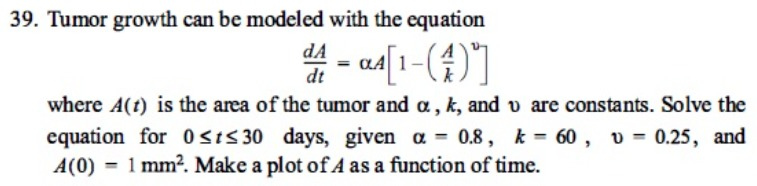

Problema:

El crecimiento de un tumor puede modelarse con la ecuación:
$$ \frac{dA}{dt} = \alpha A \left[1 - \left(\frac{A}{k}\right)^\nu \right] $$
donde \(A(t)\) es el área del tumor y \(\alpha\), \(k\) y \(\nu\) son constantes. Resuelve la ecuación para \(0 \le t \le 30\) días, dados \(\alpha = 0.8\), \(k = 60\), \(\nu = 0.25\), y \(A(0) = 1\ \text{mm}^2\). Haz una gráfica de \(A\) en función del tiempo.